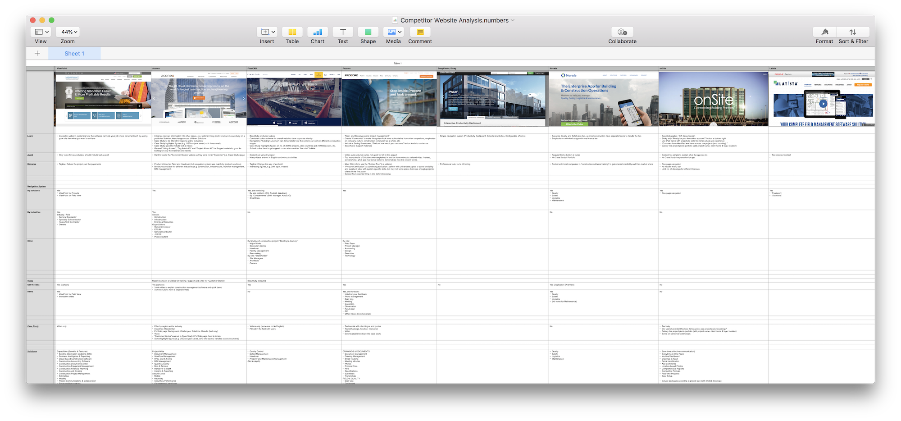

PROJECT Background
The previous website was not converting and therefore was in need of a total redesign. The website was a one-page design, with minimal product introduction or screenshots.
SnagR is a software company that provides B2B solutions to industries including construction, facility management and manufacturing for effective project management.
MARKET RESEARCH
As there was no content on the website before, there was no analytics available to gain insight from either. So I turned to conduct a competitor analysis :-
Apart from the content itself, I've also laid out how they organised their information (site map), what words do they put on the website (copywriting & jargons), brand identity (asthetics as well as tone of the copies) and journey towards conversion (contact or demo-signup form).
CONTENT STRATEGY
Being a B2B solution in conventional industries that have low tech-adaptation level, case studies are the most powerful means to convince clients that SnagR would truly be benefitial to their businesses. It'd take quite some time to develop case studies as we would need clients' consensus or even approval of the actual copy. Therefore, once we've agreed on developing case studies, I sent out some examples to all client-facing colleagues globally and assign them to supply for case studies from different industries.
The second question was if we should divide the website into 4 different subdomains to separate the industries from each other. However, we'd decided not to as SnagR is a one-piece solution and we'd like to keep the website the same way.
As the previous website focused much on the features, but not solutions, of SnagR, it failed at not talking to the readers. I'm pretty proud of the copy now - speaking jargons of clients' industries (to show that we understand them) and explaining SnagR's features as solutions to their problems :-
In this designing project, the most important element is the "Free Demo" sign up form. It converts a reader to a lead, and hopefully the sales team will follow up to turn the lead to a paying customer. So from my ends, this form is my performance card, which I will write more in depth here.
While the website has its own content strategy, I've also created one covering the whole spectrum of the company. Read more here.
DEVELOPMENT & CODING
I wrote HTML, CSS and Javascript initially to develop the website. However, to achieve the best SEO results, I couldn't write a function to swap in and out languages as the searchbot wouldn't claw the translations but only what's written in the HTML file.
For maintainability's sake (i.e. my own sake), I needed a fast way to update website content with translations. Therefore, I didn't want to maintain 9 source codes to create the 9 languages. No! There must be another way!
And there was. EJS allows the script to run before the searchbot. So when the searchbot starts to claw what's in the website, the translated copies are already inside the HTML files. I only have to ask translators to supply me the JSON file. i18n done right ;)
KEEP ITERATING
The new website has been launched, but that's not the end of story. There's no design that's the best, and a designer should always find ways to improve the website in terms of experience, asthetics, and most importantly conversion rate.
I keep iterating the different elements of the website, e.g. the homepage layout and sign up form design. I'll talk more about it here.